Next in the required sequence: analytics on October 8, with a taxi database discovery workbench. Transactions, concurrency, and optimization are now bonus material. The October 22 midterm covers the required microdb core through B+ trees.
B+ Trees from First Principles
In Lecture 5, our engine tested a condition by reading rows one at a time. Now imagine asking for one student in a table with 100,000 rows. An index gives the engine another way to find that row: look up the value, get its address, and go to the row. A B+ tree keeps these lookup entries in order and makes room as new entries arrive.
New terms are explained in the text. Hover or tap a dotted-underlined term to see its definition again.
What we will learn
Quiz 5 comes first: parsing and planning, 10 minutes. Then we will answer three questions:
- How does an index lead us to a row?
- How does the tree make room for new entries?
- When is using the index less work than scanning the table?
We will follow the same sequence as the visual slides: compare ways to organize keys, read a tree, follow a lookup and a range, then build and split the tree ourselves. Finally, we will count the work. Lab 6 stores its tree in Python objects in memory; a later example explicitly switches to an index stored in disk pages.
How to use the diagrams. Each drawing has Previous, Next, and a step selector. Pause before advancing and predict what will move, which pointer we will follow, or what the operation will return. Use Enlarge for a closer view. The diagrams use the same drawings as the slide deck; the text below explains the complete operation even without the controls.
Why add an index?
Suppose we want the name of each student whose GPA is 3.6. As in Lab 5, the table stores GPA as an integer: 36 means 3.6.
SELECT name FROM students WHERE gpa = 36;The heap file is where the table's rows live. Here, “heap” means the rows have no required order by GPA. The SQL states what we want; it does not say where the matching rows are.
| Row address | name | gpa |
|---|---|---|
| (0, 0) | ada | 39 |
| (0, 1) | ben | 31 |
| (0, 2) | cyd | 37 |
| (0, 3) | dee | 28 |
| (0, 4) | eli | 36 |
| (0, 5) | fay | 34 |
| (1, 0) | gia | 31 |
A scan tests every row and returns eli. It must keep looking after finding a match because another row might also have GPA 36. The extra row, gia, will help us see how an index handles two rows with the same GPA.
An index stores values and row addresses
A search key is the value we look up, such as GPA 36. It does not have to be unique. A RID (record identifier) is a row address: (block number, slot number). A block holds several rows; a slot identifies one place within that block.
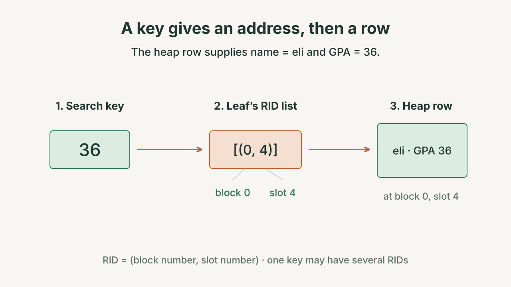
The GPA index stores 36 → [(0, 4)]. It stores 31 → [(0, 1), (1, 0)] because two rows have GPA 31. Finding the addresses and fetching the rows are separate steps.
Adding this index leaves the heap rows in place. A separate index on name could arrange names in order and point to those same rows.
The same keys, four ways to organize them
Before we build the tree, compare it with three familiar alternatives. Use the same six distinct keys—1, 3, 5, 7, 9, 11—in every picture. We will ask each structure to find 7, insert 6, and return keys 3 through 9. The results should agree; the work needed to produce them differs.
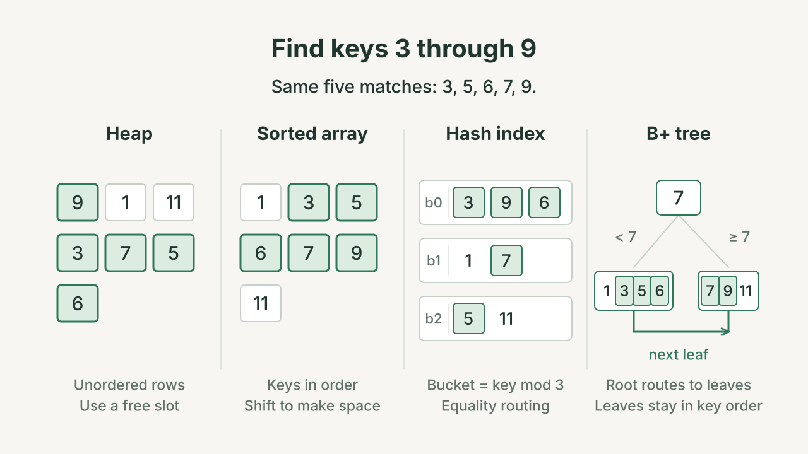
Find 7. In the unordered heap, check 9, 1, 11, 3, and finally 7. In the sorted array, compare with 5, then 9, then 7. In the toy hash index, 7 mod 3 = 1 selects bucket 1, where we still have to distinguish 7 from 1. In the B+ tree, the root separator 7 sends equality right, to the leaf containing the actual entry.
This comparison assumes the six toy keys are unique, so its heap lookup can stop at 7. Our GPA query returns all matches and has no such uniqueness guarantee. Finding one student does not establish that there are no others.
Insert 6. The heap can use its free slot. The packed sorted array shifts 7, 9, and 11 right to make a gap. The hash rule sends 6 to bucket 0 alongside 3 and 9. The B+ tree routes 6 left, where it fills the fourth leaf slot without splitting. These examples assume available space; allocating heap space, resizing a hash table, and splitting tree nodes each have their own costs.
Find 3 through 9. All four now contain seven keys, and the answer is 3, 5, 6, 7, 9. The heap tests every row. The toy hash index checks every bucket because its bucket numbers do not preserve key order. The sorted array finds the lower bound and walks forward. The tree finds the starting leaf and follows its leaf links until it reaches 11. This combination—ordered access and room to grow—is what we want to understand.
Read a small B+ tree
A tree is made of nodes, the boxes below. The root is the starting node at the top. A node can point to other nodes, called its children. A leaf has no children and stores the actual lookup entries.
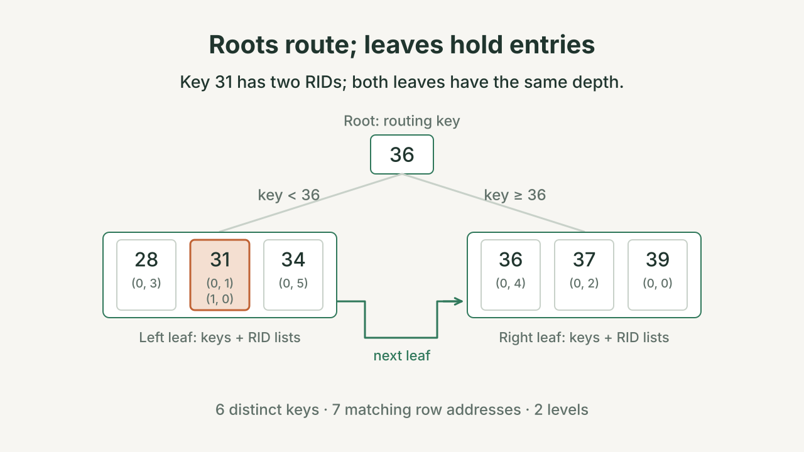
The root is an internal node: it gives directions. Its 36 is a separator, a boundary between two groups of keys. Values below 36 go left. Values equal to or above 36 go right. The root's 36 has no RID list; the leaf's 36 does.
With two separators, such as [31, 36], there would be three children: keys below 31, keys from 31 up to but not including 36, and keys at least 36. One more separator creates one more group.
A pointer is a link to another node. Each leaf has a next pointer to the next leaf in key order. Every leaf is the same number of steps from the root; we call that balanced. The tree’s height is its number of levels. Here, the height is two: the root level and the leaf level.
A lookup follows one path
Keep the full tree in view while following the highlighted route. There are three decisions: which child, which entry, and which row address? Finding the right leaf settles only the first of them.
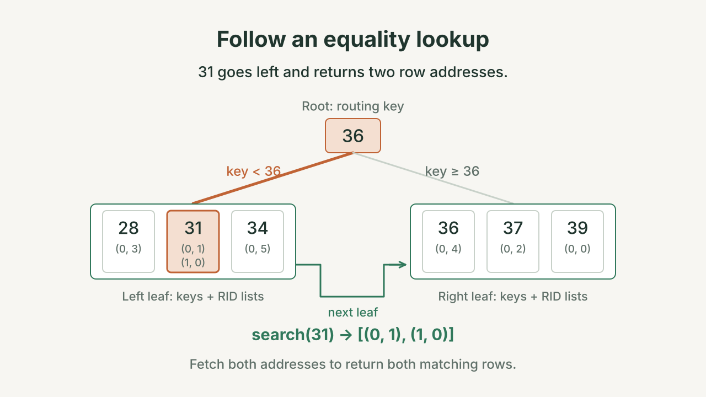
- Start at the root. To find 36, compare it with the separator 36. Equality goes right in our tree.
- Search that leaf. In
[36, 37, 39], find 36 and return its RID list:[(0, 4)]. - Fetch the row. Use
move_to_rid((0, 4))to reacheli. Now read the requestednamefield.
The index search visits two nodes. It does not visit every leaf. Looking for 35 also visits two nodes: go left, see that 35 is absent, and return an empty list. There is then no matching heap row to fetch. Searching for 31 takes the same left route, but returns [(0, 1), (1, 0)]. Fetch both addresses to return ben and gia. One lookup key can produce several rows.
A range lookup starts once, then moves right
For range(31, 37), both endpoints count. First find the leaf where 31 belongs. Then read forward through the linked leaves.
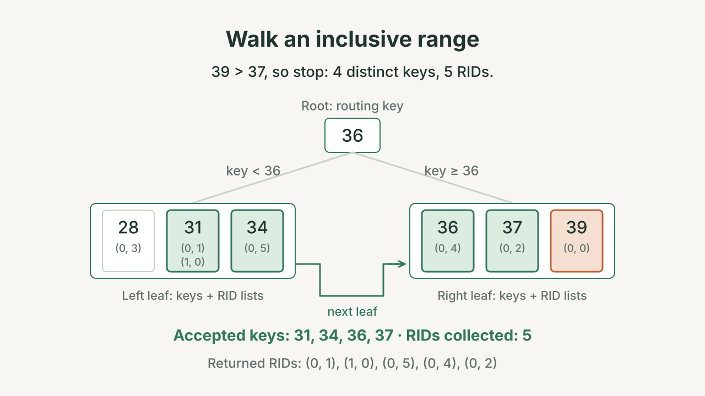
| Step | What we do | RIDs collected so far |
|---|---|---|
| Visit [28, 31, 34] | Skip 28. Take both RIDs for 31 and the RID for 34. | 3 |
| Follow next to [36, 37, 39] | Take the RIDs for 36 and 37. | 5 |
| Reach 39 | Stop: 39 is above 37, and later keys can only be larger. | 5 |
We found four different keys and five matching rows. We did not restart at the root for each match. The results are in GPA order; the heap rows themselves have not moved. Their addresses are (0, 1), (1, 0), (0, 5), (0, 4), (0, 2): notice that the addresses do not increase with the keys. The leaf chain orders the index entries, not the physical heap pages.
If the lower bound were 32 instead, the same left leaf would be the starting point, and 34 would be the first accepted key. A range endpoint need not exist in the tree. The stopping rule is key > hi, not key >= hi, because the upper endpoint is included.
Connect the diagrams to code
The visual lookup and range now give meaning to the code. In the companion below, each step highlights code and shows the tree after that operation. Choose child_index_for to watch the separator comparisons, or _descend to follow the path as it grows. Lookup and range move through the tree; the split example changes its structure. You can return to its split example after building the tree in the next section. Keep three things separate: the key we search for, the separator that gives directions, and the RID that identifies a row.
Lookup: search(36) goes right at the root and returns [(0, 4)]. Fetching that address returns eli's row.
Split: five keys [1, 2, 3, 4, 5] become leaves [1, 2] and [3, 4, 5], with a new root [3].
Range: range(31, 37) returns five RIDs, because key 31 has two rows. Enable JavaScript to see the steps.
Lab 6 uses the same worked examples. The tree methods return RIDs. The provided IndexSelectScan uses those RIDs to fetch rows.
Build the tree, then make room
Switch to small integer keys so we can concentrate on movement. In this toy tree, ORDER = 4 means at most four distinct keys per node. This is the lab's convention; other sources may define “order” differently. Letters a–g abbreviate row addresses: [a] is a RID list containing address a. Each list must travel with its key.
Begin with one node that is both the root and a leaf. Insert 3, then 1, then 4, then 2. The existing entries move to keep the keys sorted. After the fourth insertion, the leaf contains [1, 2, 3, 4]. It is full and still legal.
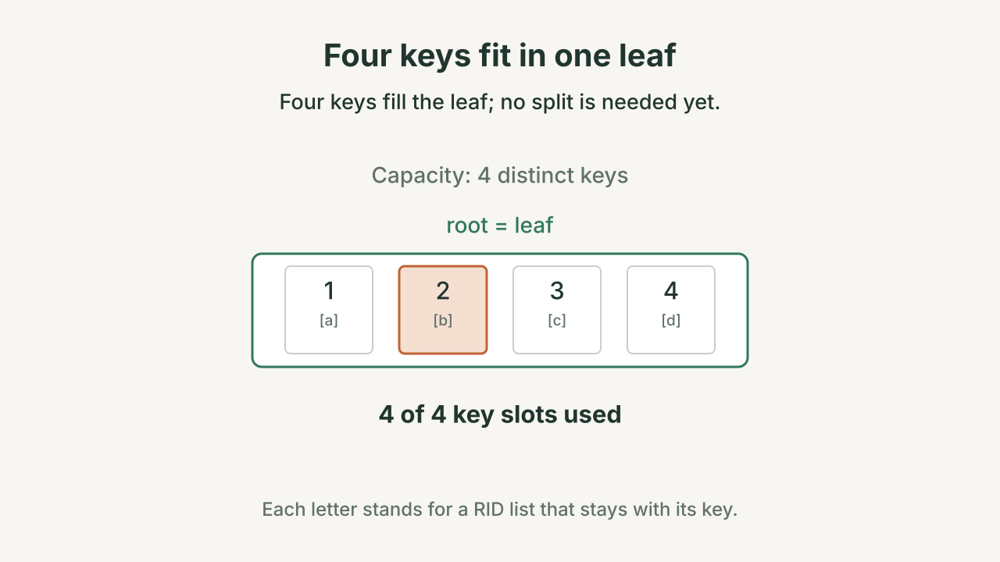
A second RID for an existing key extends that key's list. It does not consume another distinct-key slot in this teaching model. To force a split, we need a fifth different key.
A leaf split keeps every entry in a leaf
- Insert 5 in sorted order:
[1, 2, 3, 4, 5]. There are now five keys. - Split near the middle. Keep
[1, 2]in the left leaf and put[3, 4, 5]in a new right leaf. Move each key's RID list with that key. - Link the left leaf to the new right leaf. If there was already a next leaf, the new right leaf points to it.
- Put a copy of 3, the first key in the right leaf, in the parent. If there is no parent yet, create a new root.
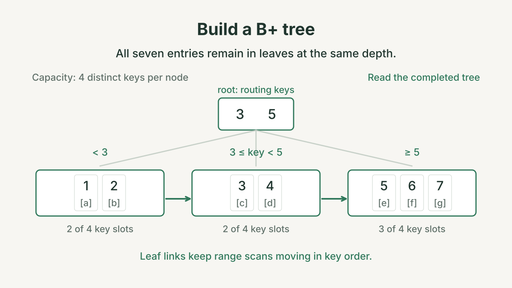
The overflow, separated leaves, repaired leaf link, and new parent are successive parts of one insertion. The wider overflow drawing shows a temporary fifth entry; it does not grant extra capacity. The operation is complete only after the parent points to the new leaf and the routing boundary is installed.
The root's copy of 3 gives directions, while the leaf's entry keeps 3 with its RIDs. If we removed the leaf entry, a range scan would miss key 3. Copying the separator preserves both jobs.
How does this match the Python slices?
There are five keys, so mid = len(keys) // 2 gives position 2. Python positions start at 0: position 2 holds key 3. keys[:mid] gives [1, 2]; keys[mid:] gives [3, 4, 5]. Split the RID lists at the same position.
The provided method is_full() returns true only when len(keys) > ORDER. Despite the name, it tests whether the node is overfull.
A split can make the parent overfull too
After a leaf splits, its parent gains a separator and a child. If that parent now has five separators, split it too. Continue upward only as far as needed.
Continue inserting in order through 12. The root contains [3, 5, 7, 9] and has five leaf children. The last leaf is [9, 10, 11, 12]. Insert 13 there: first split that leaf into [9, 10] and [11, 12, 13]. Copying 11 into the parent produces [3, 5, 7, 9, 11] with six children. The leaf split is what makes the root overflow.
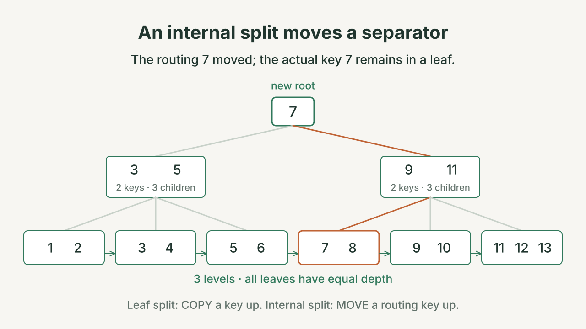
Move the middle routing key, 7, into a new root. The left internal node keeps [3, 5] and the first three children. The right internal node keeps [9, 11] and the last three. Count the pointers: each two-separator node has three children. The new root has one separator and two children.
An internal split moves the middle separator upward. Here, 7 becomes the boundary between two groups of children. It is no longer needed inside either resulting internal node. The actual entry for key 7 is still in a leaf farther down the tree.
| What splits? | What goes to the parent? | What stays below? |
|---|---|---|
| A leaf | A copy of the first key in the new right leaf | Every key and its RID list, including the copied key |
| An internal node | The middle separator, moved out of that node | The remaining separators and all child pointers |
Only a root split makes the tree taller
A split normally creates another node at the same level. When the root splits, we need a new starting node above it. That adds one level above every leaf at once. This is why the leaves stay equally far from the root.
Contrast that height increase with a smaller repair. In the earlier tree, inserting 7 splits a leaf but leaves room in the existing root:
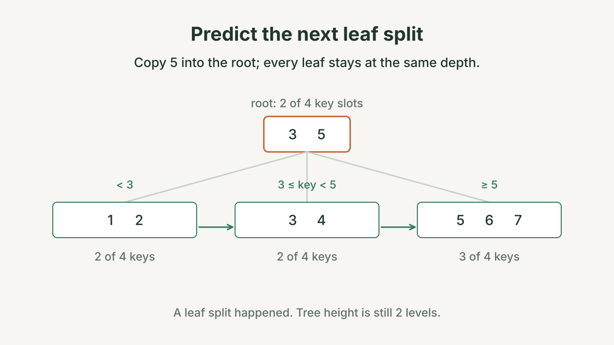
Start with root [3] and leaves [1, 2] and [3, 4, 5]. Insert 6, then 7. Which insertion causes a split? Does the height change?
Show answer
Inserting 6 gives [3, 4, 5, 6]: full, but still legal. Inserting 7 gives five keys, so that leaf splits into [3, 4] and [5, 6, 7]. Copy 5 into the root, making it [3, 5]. The root has room, so the height stays at two levels.
Splitting near the middle avoids wasted space
Preserving entries and depth is necessary, but we also want useful free space where later inserts can use it.
Dividing five leaf keys into groups of two and three leaves both nodes at least half full. Dividing them into one and four would leave one node nearly empty and the other already full.
Occupancy means how much of a node's space is used. Repeatedly leaving nearly empty nodes makes the same data occupy more nodes and can add levels to the tree. With this lab's capacity of four, middle splits leave non-root nodes with at least two keys. The root is allowed to have fewer.
These are different checks: keys can be in order and leaves can be at equal depth, yet the tree can still waste space. The lab checks both search results and tree shape.
Try your own insertions
Now control the insertions yourself. Unlike the fixed walkthroughs, this widget builds a tree from the keys you enter. The capacity is still four distinct keys per node. It hides RIDs so you can focus on routing, leaf links, and height.
Click Insert the six GPAs. They arrive in this order: 39, 31, 37, 28, 36, 34. Notice when one leaf becomes two leaves. Then use Reset and insert 1–20 to see the tree grow another level.
Leaves store the indexed values. Internal nodes show which child to follow. This picture hides the row addresses so the tree is easier to read. A fifth distinct key triggers a split.
After inserting the six GPAs, search for 36, then 35. Both searches visit two nodes; only 36 is present. The widget shows keys only. The lab tree also returns RIDs, including every RID for a duplicate key. Reset stops an animation.
The six GPAs finish with root [36] over [28, 31, 34] and [36, 37, 39], the GPA tree from our lookups. The same split rules work for these values as for keys 1–13.
Why large trees stay short
So far, we used small nodes to make the drawings readable. A database index stored on disk usually packs a node into a page. A page can hold many keys and child pointers. The exact number depends on the page size and how wide the entries are.2
Fan-out means the number of children an internal node has. More children let one decision rule out more of the remaining tree. With two children, choose between two groups. With 200 children, choose one of 200 groups.
The comparison below fixes the data at 100 million distinct keys. It assumes each leaf holds F entries and each internal node has F children. Follow one orange path: a lookup visits one node per level, not every box in the tree.
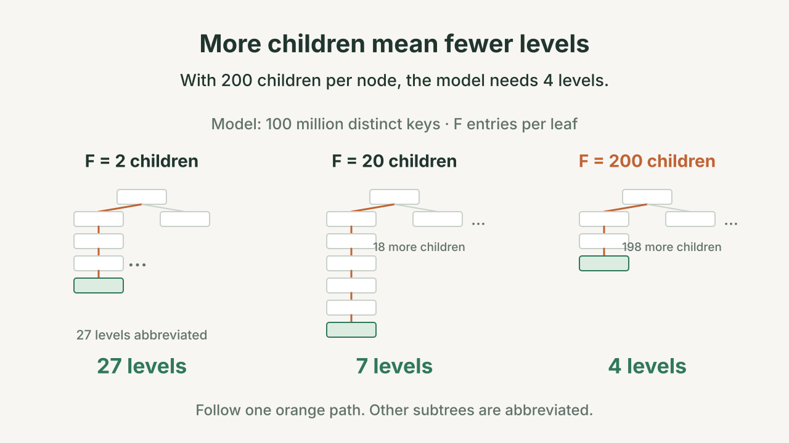
Count capacity one level at a time
For an easy estimate, suppose each leaf holds 200 entries and each internal node can point to 200 children. Assume every key has one RID and the nodes are completely full.
| Levels, including root and leaves | How the capacity grows | Maximum entries |
|---|---|---|
| 1: the root is a leaf | One leaf holds 200 entries. | 200 |
| 2 | The root points to 200 leaves. | 200 × 200 = 40,000 |
| 3 | Each child can point to another 200 nodes. | 200 × 200 × 200 = 8 million |
| 4 | Add one more level of branching. | 200 × 200 × 200 × 200 = 1.6 billion |
Four levels have room for a billion entries in this fully packed model. A lookup follows just one node at each level.
Real nodes have spare space, so this is a capacity estimate. It does not promise that every billion-row index has four levels. Our lab uses four keys per node, not 200; its reference tree for 100,000 ordered keys has 11 levels.
The same count as a formula
If a leaf holds L entries and an internal node has up to F children, a fully packed tree with h levels holds up to L × F^(h − 1) entries. The exponent counts the branching levels above the leaves. With one level, the root is a leaf and the capacity is just L.
Choose a row count, then move the slider. Each bar represents a level. The number beside it is the number of nodes needed at that level. For this model, each row has a different key, every leaf holds up to the selected number of entries, and every internal node has up to that many children. Nodes are packed as tightly as possible.
Try 100 million rows with 2, then about 200, children per node. The model changes from 27 levels to 4. This predicts index-node visits, not elapsed time or the number of physical reads.
A node visit is not always a disk read
A node visit means we inspect a node. For a disk-based index, that node is on a page. If the buffer pool already holds the page, visiting it needs no new disk read. The root is used by every lookup, so keeping it in memory can save work.
For a concrete disk-index example, assume a four-level search path whose three upper pages are cached, while its leaf and the target heap page are uncached. Visiting the root and two internal nodes adds three visits and zero reads. The leaf adds one visit and one read; following its RID adds one heap-page visit and one more read. The totals are four index-node visits, one heap-page visit, and two physical reads.
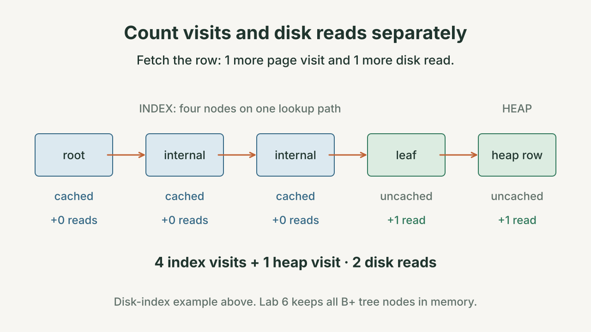
| What we count | What it tells us |
|---|---|
| Tree-node visits | How many tree nodes the search follows. In Lab 6, those nodes are Python objects in memory. |
| Heap rows fetched | How many matching row addresses we follow. Several rows may share a block. |
| Physical reads | Which pages must actually be brought in from storage because they are not cached. |
| Elapsed time | How long the whole measured operation takes, including comparisons and other work. |
A short tree reduces search work. The number of matches, their locations in the heap, and the cache still affect the cost of fetching the answers.
When does an index help?
The first question is how many rows match? An index can save a great deal of work when we need just a few rows. PostgreSQL's B-tree indexes support both equality and range searches.1
In Lab 6, a complete scan for uid = 77777 examines 100,000 rows across 294 heap blocks. The reference index follows 11 in-memory tree nodes and returns one RID. The matching row occupies one heap block. The benchmark times index construction separately from the lookup.
Many matches can make a scan cheaper
First use a heap small enough to see: six pages with two rows each. One matching RID reaches one page. A broader condition returns eight RIDs spread across all six pages. In the illustrated RID order, we visit pages 0 → 4 → 1 → 5 → 2 → 3 → 0 → 4. Some pages appear twice; a repeat visit may still hit the buffer pool.
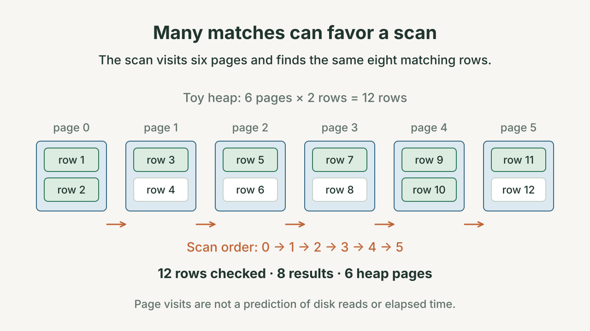
A scan visits pages 0 → 1 → 2 → 3 → 4 → 5, tests all twelve rows, and returns those same eight matches. The index no longer avoids any distinct heap page in this example, and it adds tree traversal and RID processing. That makes a scan a plausible alternative; it does not establish a universal timing threshold.
Now suppose a condition matches 99,000 of those 100,000 rows. The index returns many RIDs. If those addresses send us back and forth across heap pages, following them can be more work than scanning the 294 blocks in order.
That is why an available index is a choice, not an instruction to use it. The planner compares the alternatives. Caching, the order of the heap rows, and which columns the query needs can change the answer.4
Selectivity is the fraction of rows that match. One match out of 100,000 is 1 / 100000. In everyday database language, that is a “highly selective” condition because it excludes almost everything. Say the fraction or match count when the wording could be confusing.
An index also has to be built and maintained
Insert (uid=42, name=mia, gpa=36) and let its heap address be r. A uid index receives 42 → [r]; a name index receives mia → [r]; a GPA index receives 36 → [r]. If 36 already exists, append r to that entry's RID list. All three addresses refer to the same new row.
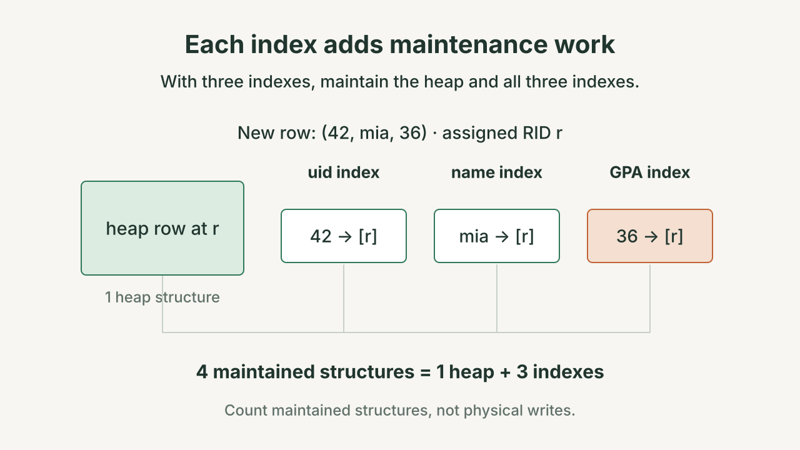
The animation compares different index configurations; it is not creating a new whole-table index after each insert. Maintaining an existing index and building one from an existing table are different operations.
| Action | Extra work for the index |
|---|---|
| Build an index on an existing table | Read the existing rows and create entries. Lab 6 does this with one scan and one insertion per row. |
| Insert a row | Add its key and RID to each index on the table. A node may need to split. |
| Change an indexed value | Replace the old lookup entry so searches find the row under its new value. |
| Delete a row | Remove its index entries so they no longer point to that row. |
| Keep the index | Use space for keys, row addresses, child pointers, and room for future inserts. |
Adding three indexes means an insert must maintain the heap and three index structures. It does not mean exactly four disk writes: buffering and page splits affect the actual writes. Choose indexes whose lookup benefits justify this extra work.3
Optional: what if the index already has every column we need?
An index on GPA tells us where to find a student's name, but does not itself store the name. A covering index also contains the columns a particular query needs. For this query, including name could let the engine answer without fetching the row's fields from the heap.
PostgreSQL supports INCLUDE columns for this purpose. It may still need heap access to check whether a row is visible to the query. Extra columns also make the index larger. This is an extension beyond the Lab 6 tree.5
Connect the ideas to Lab 6
You will implement four methods in btree.py. The node class and the helper that follows a root-to-leaf path are provided. The table storage code is also provided.
| Method | Plain-language job |
|---|---|
search(key) | Find the key's leaf. Return a copy of its RID list, or an empty list if the key is missing. A copy lets the caller change its result without changing the index. |
insert(key, rid) | Put the new entry in order, or append the RID to an existing key's list. Repair any nodes that become overfull. |
_split(node, parent) | Divide an overfull node, keep its entries or children together, and update the parent. Create a root when needed. |
range(lo, hi) | Start at the leaf for lo. Follow the leaf links and collect RIDs through hi, including both endpoints. |
The lab tree lives in memory. The provided benchmark builds it from the heap, then uses IndexSelectScan to fetch matching rows. The SQL planner from Lab 5 does not automatically choose this new index. Storing tree nodes on disk and integrating index choice into SQL planning are later extensions.
A balanced-looking tree can still lose a row
Imagine a faulty leaf split that moved 36 out of its leaf instead of copying it. The root still contains separator 36, and the leaves can still be sorted and equally deep. Yet search(36) cannot return eli's RID, and range(34, 37) returns only 34 and 37. The routing key cannot fill in a missing leaf entry.
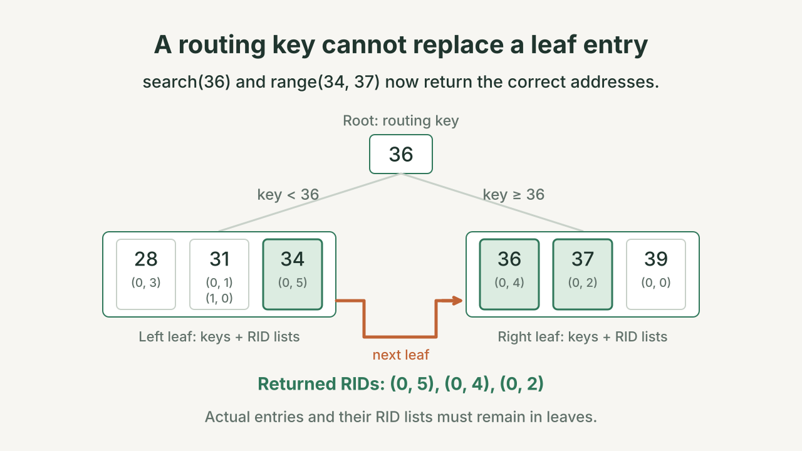
Check the result addresses as well as the shape: the repaired range returns [(0, 5), (0, 4), (0, 2)]. After an insertion, verify that keys remain sorted, routing reaches the right children, each internal node has one more child than separator, every key retains its RID list, the leaf chain is complete, and all leaves have equal depth. Check occupancy separately.
For Thursday, October 1, get the eight Lab 6 starter files and run python3 test_btree.py. A fresh starter reports 0/9 passing because the four methods are unfinished. You can test one method at a time with --unit. Bring a drawing of what happens when you insert 5 into [1, 2, 3, 4].
Explain one complete operation
Start with [1, 2, 3, 4], insert 5, and then search for 4. Narrate the changes before advancing: overflow, split, link, copy the separator, route right, return the address, fetch the row. If you can explain why key 3 remains in its leaf and why finding 4 does not yet fetch its row, the two halves of the lecture fit together.
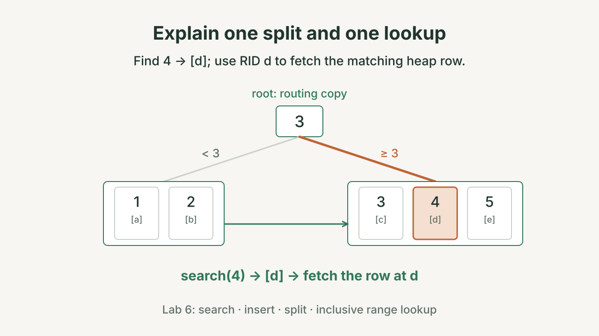
- Find the address, then fetch the row. Internal nodes give directions; leaves store keys and RIDs.
- Keep every entry in a leaf. A leaf split copies a separator upward. An internal split moves a separator upward.
- Only a root split adds a level. Every leaf gains that level together.
- Count the whole lookup. A short search path helps, but many matching rows can still make a scan cheaper.
Thursday, October 1: Lab 6, building and measuring the tree. Next lecture, Thursday, October 8: analytics and the taxi discovery database. Tuesday, October 6 is during Reading Days. Quiz 6 opens the October 8 lecture.
Common questions
Is the search key the same thing as a primary key?
No. Here, “search key” means the value an index is organized by. Several students can have GPA 31. The index stores all of their RIDs under that value.
Does a RID stay valid forever?
No. It identifies a block and slot while that row occupies the slot. If the row is deleted or the slot is reused, indexes referring to it must be updated. A RID is a storage address, not a permanent student identifier.
Why not just use a sorted list or a hash table?
A sorted array supports binary search: compare with the middle value and repeatedly halve the remaining search range. But inserting a value in the middle may shift many entries. A B+ tree makes room by splitting individual nodes. A hash index is useful for equality searches, but it does not keep keys in order for a range such as 31 through 37. These structures suit different workloads.1
Does “balanced” mean both sides have the same number of keys?
No. It means every leaf is at the same depth. One leaf can hold two keys while another holds four. Occupancy is a separate rule about how full a node must be.
Why is it called B+ rather than a binary search tree?
A binary search tree has at most two children per node. A B+ tree can have many children. In the B+ tree described here, every key-to-RID entry lives in a leaf, and the leaves are linked for range scans.
What about deletion and saving the tree to disk?
Neither is required in Lab 6. Deletion may leave nodes too empty; textbook algorithms move entries between neighboring nodes or merge nodes. A persistent index stores nodes in pages and needs machinery to recover from crashes and handle concurrent changes. The lab keeps the tree in memory so you can focus on searching, inserting, and splitting.7
Sources and further reading
The small examples follow the Lab 6 interface and its measurement script. The links below support the discussion of production indexes.
- PostgreSQL: Index Types — equality and range queries, and the difference from hash indexes.
- PostgreSQL: Database Page Layout — index storage uses fixed-size pages. The 200-entry capacity in this reading is an illustrative assumption.
- PostgreSQL: Introduction to Indexes — lookup benefits, maintenance, and storage costs.
- PostgreSQL: Using EXPLAIN — choosing between index access and a scan.
- PostgreSQL: Index-Only Scans and Covering Indexes — included columns and visibility checks.
- Sciore: Database Design and Implementation, second edition — optional book reading, chapter 12.
- PostgreSQL: B-Tree Implementation — further details beyond the teaching tree.